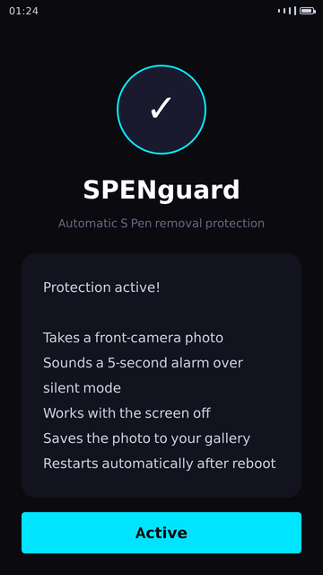
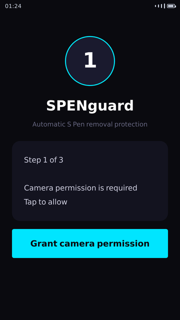
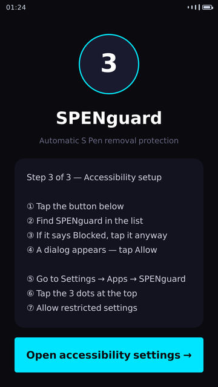
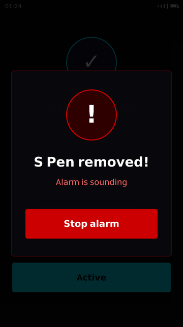

מה האפליקציה עושה
SPENguard שומרת על ה-S Pen שלך. ברגע שהעט נשלף מהמכשיר, האפליקציה מפעילה אזעקה חזקה ומצלמת תמונה במצלמה הקדמית — גם כשהמסך כבוי.
היכולות
- זיהוי מיידי של שליפת ה-S Pen
- אזעקה בעוצמה מלאה, גם במצב שקט
- צילום אוטומטי במצלמה הקדמית, נשמר לגלריה
- מסך "עצור אזעקה" שמופיע מעל מסך הנעילה
- פועלת גם כשהמסך כבוי, ומתחדשת אוטומטית אחרי הדלקה מחדש
איך זה נראה




פרטיות בקצרה
התמונות שהאפליקציה מצלמת נשמרות רק במכשיר שלך ואינן נשלחות לשום מקום. האפליקציה מציגה מודעות דרך Google AdMob, שאוסף מידע על המכשיר לצורך הצגתן.
הורדה
What the app does
SPENguard protects your S Pen. The moment the pen is pulled out of the device, the app sounds a loud alarm and takes a front-camera photo — even while the screen is off.
Features
- Instant detection when the S Pen is removed
- Full-volume alarm, even in silent mode
- Automatic front-camera photo, saved to the gallery
- A "stop alarm" screen that appears over the lock screen
- Works with the screen off and re-arms automatically after a reboot
What it looks like
Privacy at a glance
Photos taken by the app stay on your device only and are never sent anywhere. The app shows ads through Google AdMob, which collects device information in order to serve them.
Read the full privacy policy →